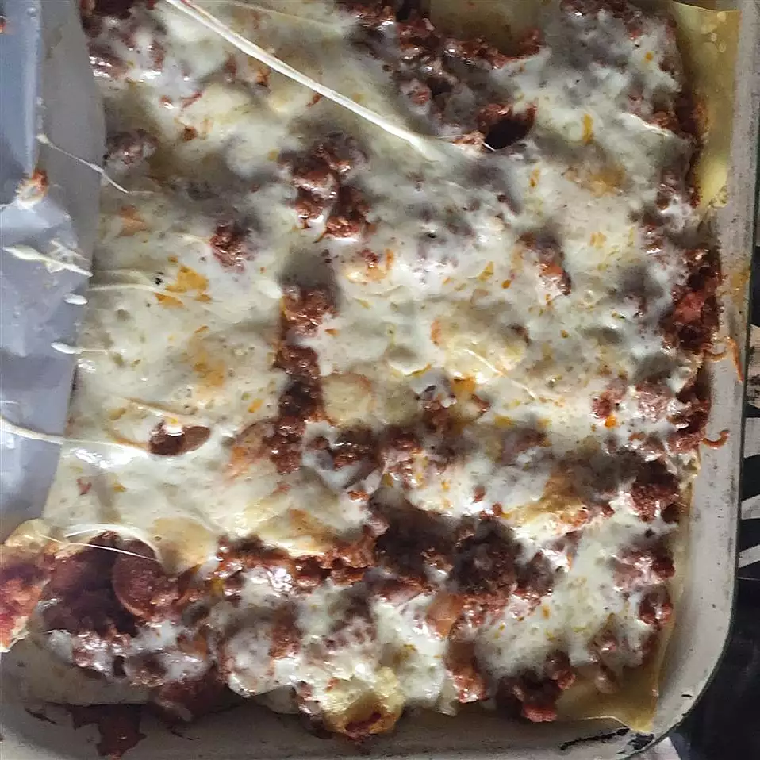

Lisa's Lasagna

Lasagna is a wide, flat sheet of pasta. Lasagna can refer to
either the type of noodle or to the typical lasagna dish which
is a dish made with several layers of lasagna sheets with sauce
and other ingredients, such as meats and cheese, in between the
lasagna noodles.
ingredients
- pound lean ground beef
- 1 onion, chopped
- 1 green bell pepper, chopped
- 1 teaspoon Italian seasoning
- salt and pepper to taste
- 2 (6 ounce) cans tomato paste
- 2¼ cups water
- 1 pint part-skim ricotta cheese
- 1 egg
- 2 cups shredded mozzarella cheese
- 8 lasagne noodles, cooked and drained
- Step 1: Brown meat with onions and bell peppers, and season to taste. Add tomato paste and water. Let simmer.
- Step 2: In a mixing bowl, mix ricotta cheese with beaten egg. Set aside.
- Step 3: Preheat oven to 370 degrees F (190 degrees C). Butter a 9 x 13 inch baking dish.
- Step 4: Begin layering all ingredients beginning with a few spoonfuls of tomato sauce. Follow with noodles, then ricotta mixture, and shredded mozzarella. Repeat until dish is filled.
- Step 5:Bake at 375 degrees F (190 degrees C) about 35 to 45 minutes, until bubbly. Let cool a couple of minutes before cutting.